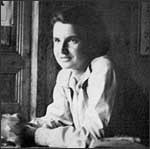

Rosalind Elsie Franklin
1920–1958
Rosalind Franklin was born on July 25, 1920, into a well-educated,
wealthy family in London. She attended St. Paul's Girls' School—one
of the few schools in London where girls could learn physics and
chemistry. By the age of 15, she'd decided to become a scientist.
Her decision caused an uproar in her family: her father did not
approve of higher education for women. Franklin's aunt and mother
took her side, and eventually her father relented. In 1938, Franklin
enrolled at the University of Cambridge.
When Franklin graduated, she received a fellowship, but she gave
it up to help the war effort by studying carbon and searching for
more efficient ways to get fuel from coal. After the war, she continued
her research and earned a Ph.D. in physical chemistry. She moved to
Paris, where she lived in a tiny, single-room apartment—a far
cry from the luxury she'd grown up with. Franklin worked at
a laboratory where she learned to use X-ray diffraction techniques
in her ongoing study of the structure of carbon.
In 1951, Franklin returned to London to join a group of scientists
who were trying to determine the structure of DNA. From the moment
she arrived, Franklin, as a woman, was treated as an outsider. She
wasn't even allowed to eat in the same dining hall as her co-workers!
There were more serious problems, as well. One of the other scientists,
Maurice Wilkins, happened to be on vacation when Franklin joined
the group. When he returned, he misunderstood her position: he thought
she was supposed to be a technical assistant, when in fact she was
leading her own research group on a project that was just as important
as his own.
Despite the less-than-welcoming reception, Franklin set to work.
She managed to extract DNA fibers that were finer than any that
other researchers had obtained, and she arranged them in parallel
bundles. Carefully, methodically, she documented and analyzed her
data. She was the first scientist to realize that the sugar and
phosphate chains in DNA were located outside the molecule. Using
a technique that she invented, she found a way to photograph the
DNA molecule using X-ray crystallography.
Franklin was on the verge of unraveling the secret of the DNA molecule,
but she couldn't quite figure out how to put it all together. Then,
without her knowledge or permission, Maurice Wilkins—the co-worker
from her lab—showed Franklin's data and photographs to two of her
rivals, James Watson and Francis Crick.
When Watson saw Franklin's work, everything became clear to him.
In 1953, Watson and Crick published an article explaining the double-helix
structure of the DNA molecule. Franklin—who still didn't realize
that Watson and Crick had used her research—published another article
to support their work.
After the publication of Watson and Crick's article, Franklin
turned her attention to studying viruses, especially the tobacco
mosaic virus and the polio virus. She died on April 16, 1958, of
ovarian cancer, at the age of 37.